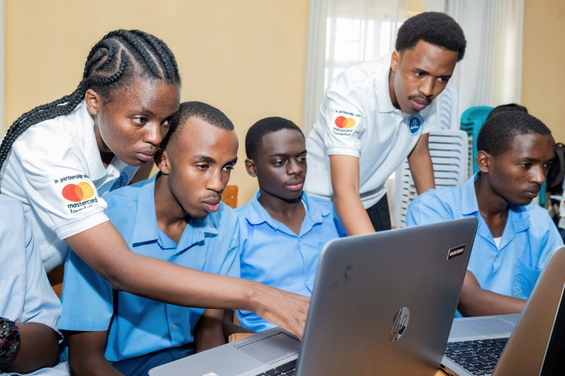
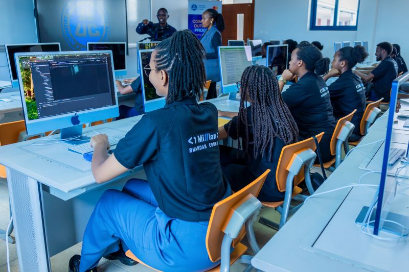
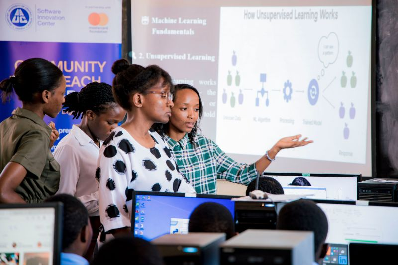

The Adventist University of Central Africa is pleased to announce the January, 2026 Intake for undergraduate and masters’ programmes, at all of its campuses (Masoro, Gishushu). Admissions are open in the programmes listed below: Undergraduate Studies Faculty of Theology School of Medicine: MD of General Medicine Faculty of Health Sciences […]

💡 Sparks of innovation in Nyabihu! Students at Rwankeri engaged in AI and Data Visualization with purpose.
Our dedicated trainers are on their way to empower students at Rwamagana with AI & Data Science. Let’s inspire the next generation of tech leaders!
Rwanda’s vision to train one million coders by 2029 under the Second National Strategy for Transformation (NST2) is gaining momentum. AUCA’s program is a key driver of this national goal.
📚 Gitwe goes digital! The outreach ended with smart solutions from passionate young minds.
Machine Learning Basics — first AI models at KASS, hashtag#Rwamagana. Mastercard Foundation
AUCA has launched an AI & Big Data training outreach program in Rwanda! This initiative empowers secondary students with cutting-edge skills to tackle real-world challenges.


The Adventist University of Central Africa (AUCA) was founded in 1978. The official opening took place on 15 October 1984 and the university had its definitive operating license via the law n0 0056/05 of 3rd February 1988, granting AUCA the legal personality as a nonprofit making association.
AUCA: A Modern-Day Calling, Rooted in Israel’s Mission
From the very beginning, God called Israel to be a light to the nations—a people set apart to reveal His character, uphold His truth, and serve as a blessing to the world. Adventist University of Central Africa (AUCA) carries that same divine calling today.
Just as Israel was entrusted with God’s law and the prophetic mission, AUCA is entrusted with the sacred duty of educating, equipping, and empowering students to transform society through faith-based excellence. Our mission is not just academic; it is spiritual, moral, and missional.
1. A Light to the Nations
Israel was called to reflect God’s glory to the surrounding nations. AUCA stands as a beacon of Christian education in Africa, training students to uphold the values of integrity, service, and innovation in a world that desperately needs divine truth.
2. Guardians of God’s Truth
God entrusted Israel with His word. At AUCA, we uphold the Bible as the foundation of all knowledge, ensuring that every graduate is not only academically prepared but also spiritually anchored in God’s will.
3. A Blessing to the World
Israel’s mission was to bless all nations. AUCA fulfills this calling by equipping students to be agents of change—leaders, innovators, and professionals who serve their communities with excellence and Christlike love.
4. Preparing the Way for Christ’s Kingdom
Just as Israel was chosen to prepare the way for the Messiah, AUCA is called to prepare students for Christ’s second coming by integrating faith and learning, inspiring character development, and fostering a commitment to the Great Commission.
AUCA: Called for a Purpose
We are more than a university; we are a movement, a mission, and a calling. As Israel was set apart to reveal God’s plan to the world, so AUCA stands today—training a generation of leaders who will illuminate the world with knowledge, service, and the gospel truth.
“You are the light of the world. A city set on a hill cannot be hidden.” — Matthew 5:14
At AUCA, we embrace this divine calling. Join us in the mission.
Mr. Ishimwe M. Prince, HOD Software Engineering
AUCA is the place where life skills, knowledge and Christian values are nurtured to mould students into citizens fit for God for and for the country.
Kevin , Theology Student AUCA